아이가 혼자서도 척척 사용할 수 있도록 만든 그림 설명서예요. 부모님과 아이가 함께 한 번만 훑어보면 충분해요 — 그다음부터는 아이가 지도를 탭탭 눌러가며 스스로 학습을 이어갈 수 있어요.
docssam1.github.io/lete-on/reading-world회원가입도, 비밀번호도 필요 없어요. 이름(또는 별명)만 입력하면 바로 학습을 시작할 수 있고, 같은 이름으로 로그인하면 태블릿이든 컴퓨터든 어떤 기기에서든 이어서 학습할 수 있어요.
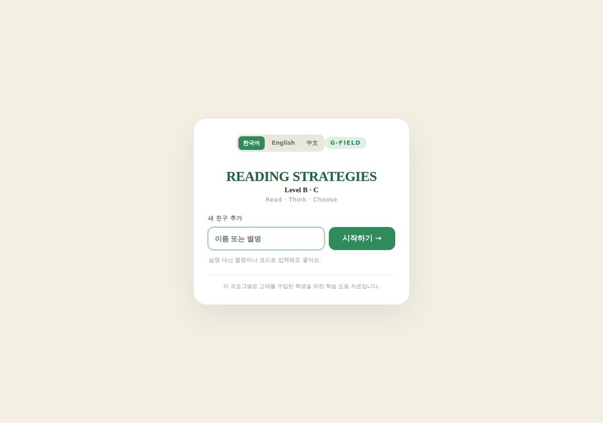
https://docssam1.github.io/lete-on/reading-world/ 주소로 들어가면
이름(또는 별명)을 입력하는 화면이 나와요.
실명이 아니어도 괜찮아요 — 별명이나 학원에서 받은 코드를 입력해도 돼요. 같은 이름으로 로그인하면 다른 기기에서도 진행 상황이 그대로 연동돼요.
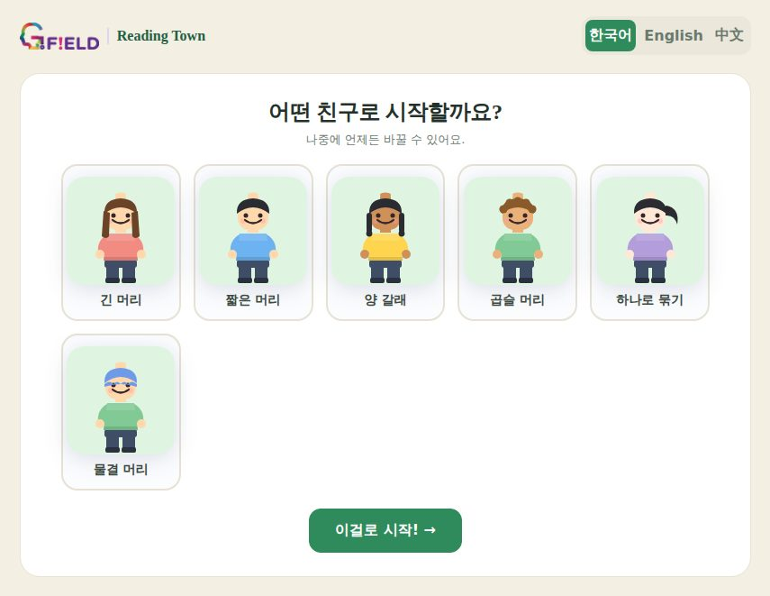
처음 로그인하면 나를 대표할 캐릭터(아바타)를 골라요. 머리 모양, 피부색, 옷 등은 나중에 마을에서 코인으로 자유롭게 바꿀 수 있으니 지금은 마음에 드는 걸로 가볍게 골라도 돼요.
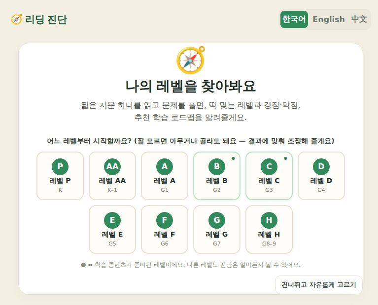
캐릭터를 고르고 나면 짧은 리딩 진단 테스트를 볼 수 있어요. 내 영어 읽기 레벨을 가늠해보고 어떤 책부터 시작하면 좋을지 추천을 받는 용도예요.
지금 하고 싶지 않다면 "건너뛰고 자유롭게 고르기"를 눌러도 전혀 문제없어요. 나중에 마을 지도 위쪽 툴바의 🧭 나침반 버튼을 눌러 언제든 다시 볼 수 있어요.
로그인하면 레고 블록으로 만든 아기자기한 마을이 펼쳐져요. 마을 안의 건물들이 각각 하나의 학습 코너예요.
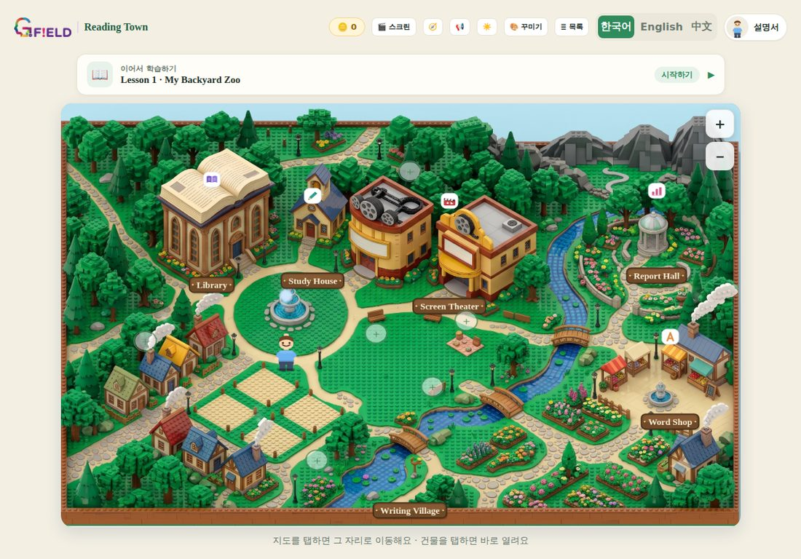
마을 지도 — 위쪽 툴바에 코인, 스크린 극장, 진단, 공지, 꾸미기, 목록 버튼이 모여 있어요.
| 건물 | 하는 일 |
|---|---|
| 📚 Library | 영어 원서 eBook을 페이지 넘기며 읽어요. |
| 🏠 Study House | CARS 등 교재로 학습해요. 레벨 사다리를 따라 자유롭게 책을 골라요. |
| 🎬 Screen Theater | 영상을 보고 짧은 퀴즈를 풀어요. |
| 🔤 Word Shop | 단어 카드, 암기 게임, 나만의 단어장을 관리해요. |
| 📊 Report Hall | 레슨별 학습 리포트를 확인해요. |
| ✏️ Writing Village | 지도 아래쪽 표지판을 탭하면 이웃 마을인 글쓰기 마을로 이동해요. |
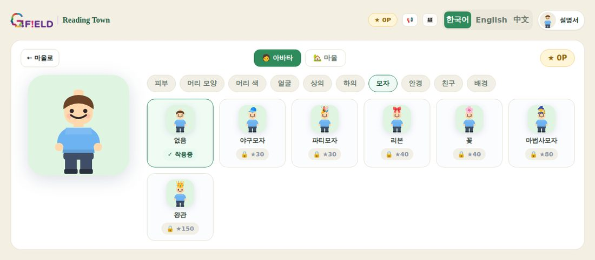
레슨을 완료할 때마다 모은 코인(★P)으로 모자·옷·안경 같은 아이템을 사서 캐릭터를 꾸밀 수 있어요. 상단 탭에서 "마을"을 누르면 마을 장식도 같은 방식으로 꾸밀 수 있어요.
Study House에서 책을 고르면 한 레슨이 7단계로 진행돼요. 잠금은 전혀 없어요 — 어떤 책, 어떤 레벨을 고르든 아이가 자유롭게 선택할 수 있어요.
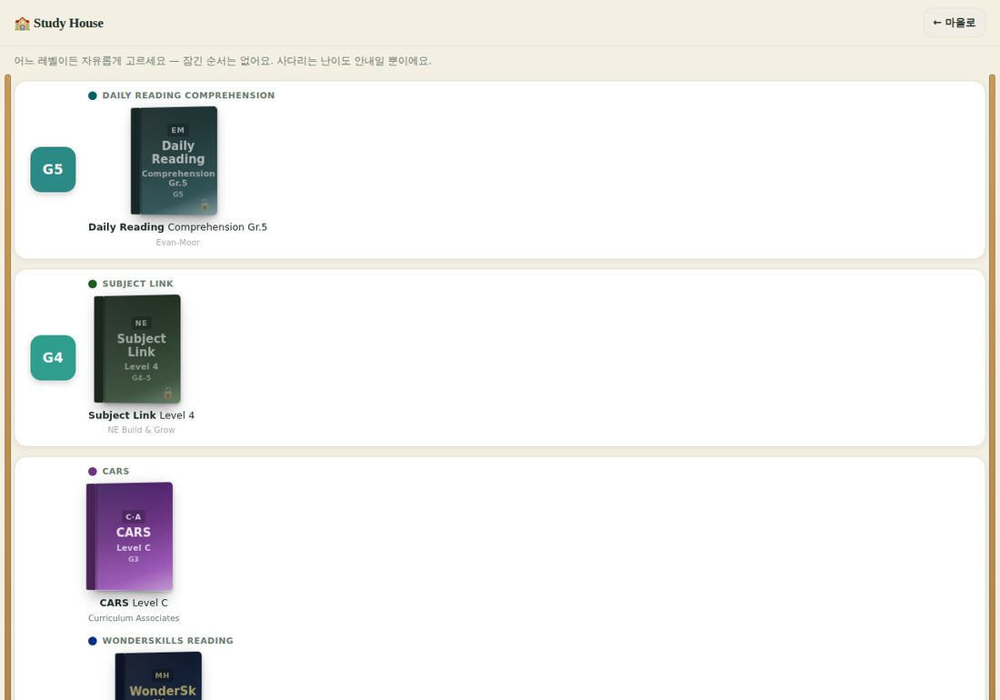
레벨 사다리를 따라 여러 책이 진열돼 있어요. 난이도와 상관없이 자유롭게 고를 수 있고, 레벨업은 잠금장치가 아니라 그냥 축하 보상이에요.
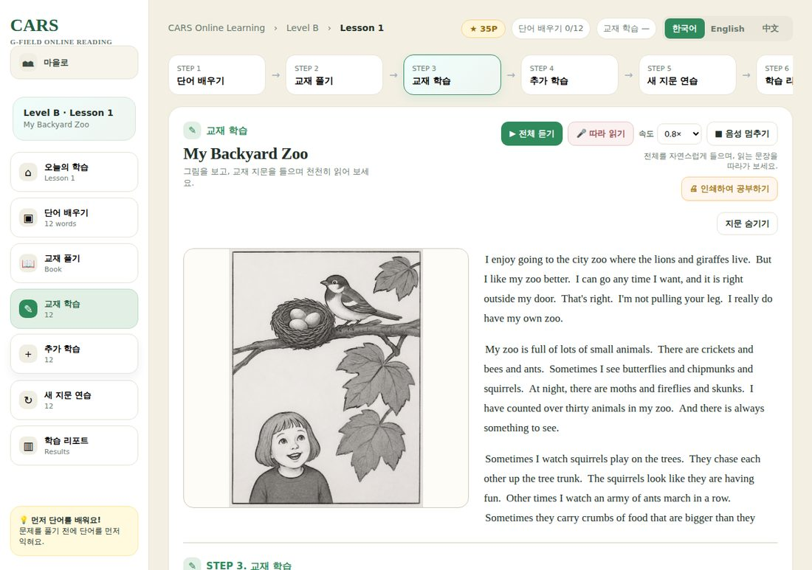
레슨에 들어가면 상단에 STEP 1~7 진행 바가 보여요. 완료한 단계는 초록색으로 표시되고, 지금 있는 단계가 강조돼요. 아무 단계나 눌러서 이동할 수도 있어요.
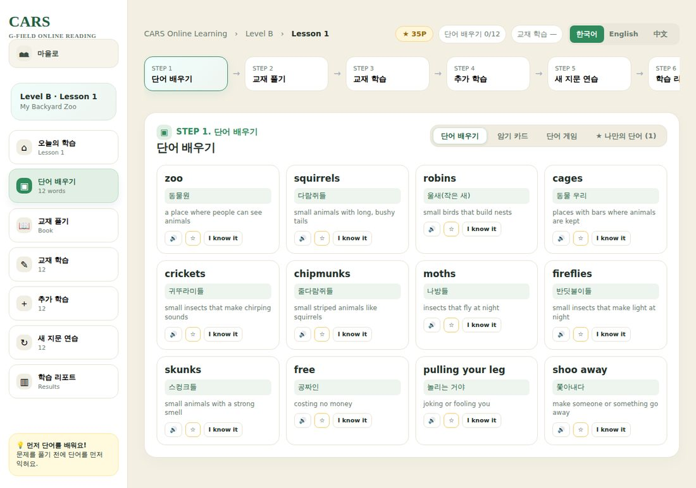
레슨의 핵심 단어 12개를 카드로 배워요. 🔊 버튼으로 발음을 듣고, ☆ 별표로 어려운 단어를 나만의 단어장에 저장할 수 있어요. 암기 카드·단어 게임 탭도 있어서 반복 연습이 쉬워요.
CARS 문항 없이 순수하게 책을 즐기는 공간이에요. 서가에서 책을 고르면 배경지식 → 어휘 → 읽기 → AR 퀴즈 순서로 진행돼요.
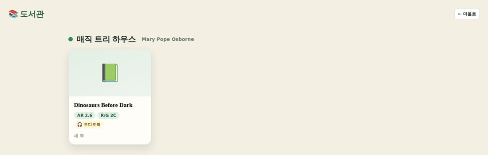
표지를 탭해서 읽고 싶은 책을 골라요. AR 지수와 R/G(리딩 그룹) 표시로 난이도를 미리 볼 수 있어요.
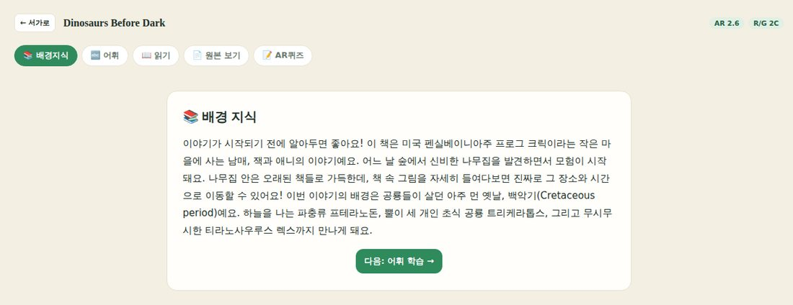
책을 처음 열면 이야기의 배경(시대·인물·설정)을 먼저 소개해줘요. 이해를 돕는 워밍업 단계예요.
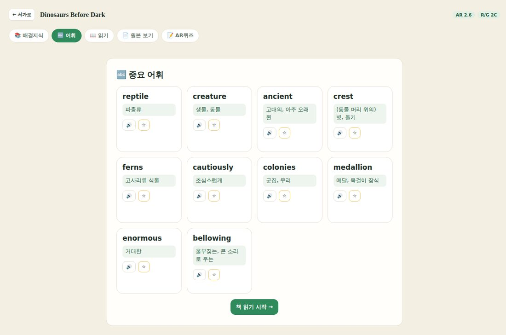
책에 실제로 나오는 어려운 단어 10개를 미리 배워요. 🔊 발음 듣기, ★ 내 단어장 저장도 가능해요.
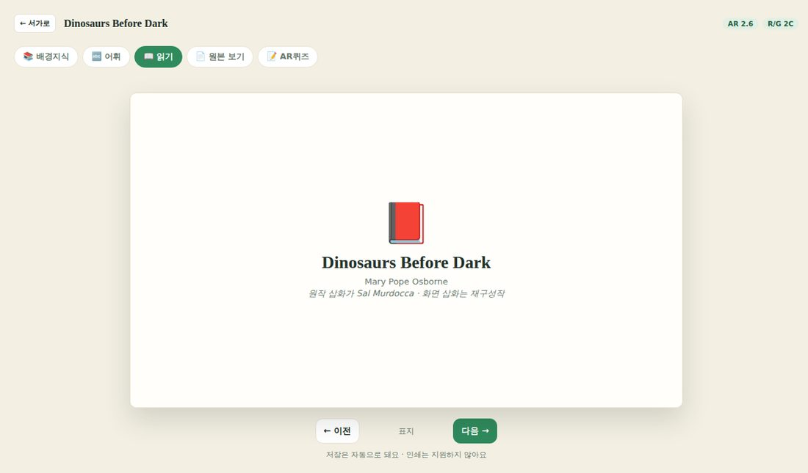
실제 책처럼 두 페이지가 나란히 펼쳐져요. 🔊 듣기를 누르면 지금 읽는 문장이 하이라이트로 따라가며 표시돼요. "원본 보기" 탭에서는 실제 책 페이지 이미지도 확인할 수 있어요.
읽던 위치는 자동으로 저장되니, 나중에 다시 들어가면 이어 읽기로 바로 연결돼요.
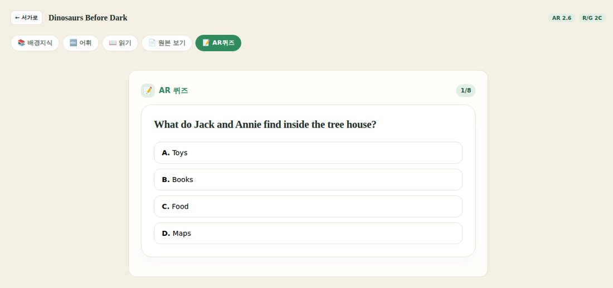
줄거리 이해도를 확인하는 객관식 퀴즈예요. 60% 이상 맞히면 통과! 통과 시 코인을 받을 수 있어요.
마을 지도 아래쪽 ✏️ 표지판을 탭하면 이웃 마을인 Writing Village로 이동해요. 마을 친구 부엉이 올리(Oli the Owl)가 보낸 질문 편지에 답장을 쓰면서 자연스럽게 글쓰기를 배우는 공간이에요.
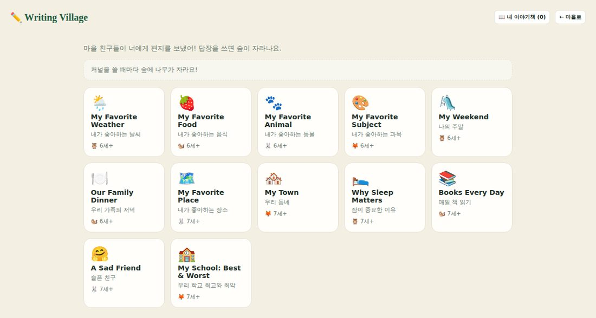
표지판을 탭하면 올리가 보낸 질문 편지 목록이 나와요. 원하는 주제를 골라 열면 됩니다.
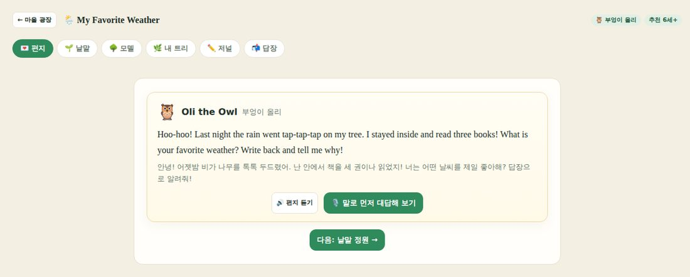
올리가 궁금한 걸 물어봐요. 🔊 버튼으로 편지를 들을 수 있고, 🎙️ 버튼을 누르면 글로 쓰기 전에 말로 먼저 대답해보는 연습도 할 수 있어요.
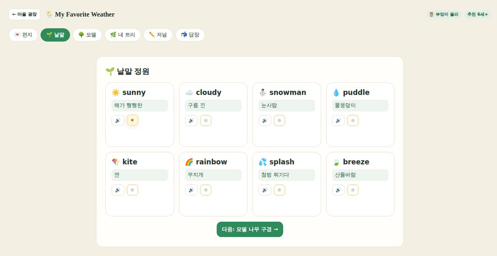
답장에 쓰기 좋은 낱말들을 미리 만나요. 🔊 발음을 듣고, ★로 마음에 드는 낱말을 저장해요.
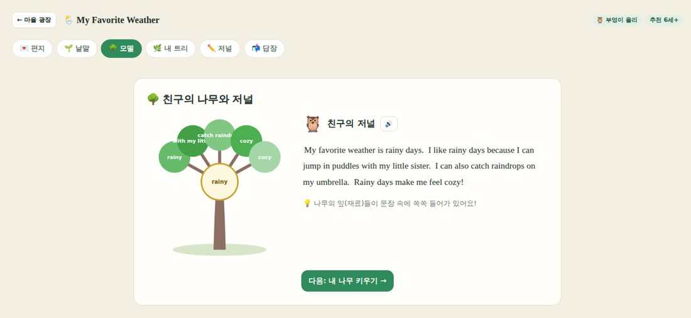
먼저 써본 친구의 예시 저널을 나무 모양으로 구경해요. "이렇게 쓰면 되는구나" 하는 감을 잡는 단계예요.
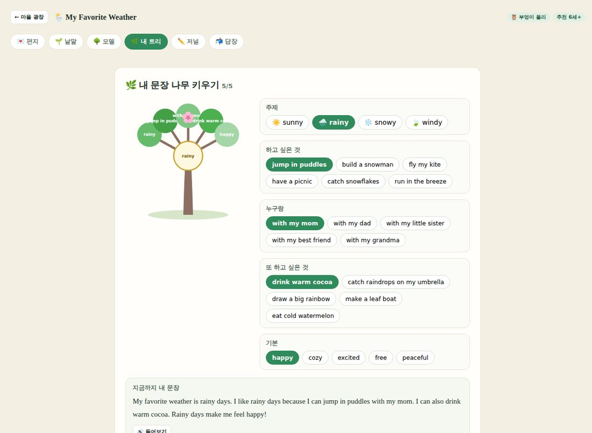
주제·인물·행동·감정 같은 낱말 조각을 하나씩 고르면, 고를 때마다 나무가 자라면서 문장이 자동으로 완성돼요. 완성된 문장은 소리로도 들려줘요.
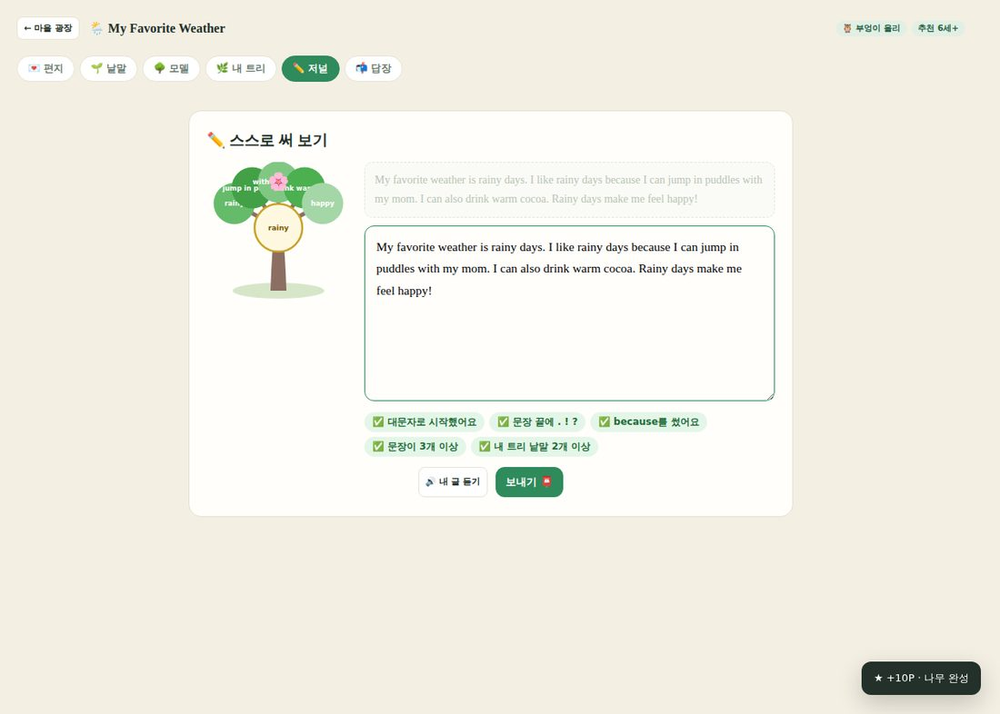
이제 내 힘으로 답장을 써봐요. 화면 아래 다듬기 체크리스트(대문자로 시작했는지, 마침표를 찍었는지, because로 이유를 말했는지, 문장 3개 이상인지, 오늘 배운 낱말을 썼는지)로 스스로 점검할 수 있어요.
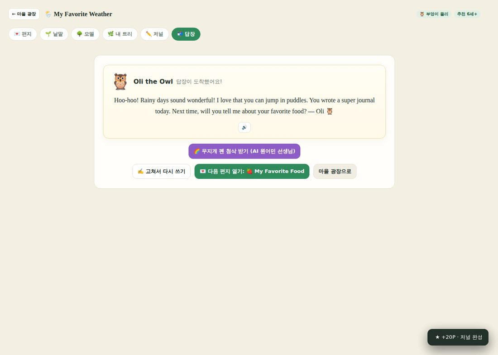
저널을 보내면 올리가 바로 답장을 보내줘요! 저널을 쓸 때마다 숲에 나무가 한 그루씩 늘어나고, 모든 저널은 My Storybook(📖)에 차곡차곡 보관돼요.
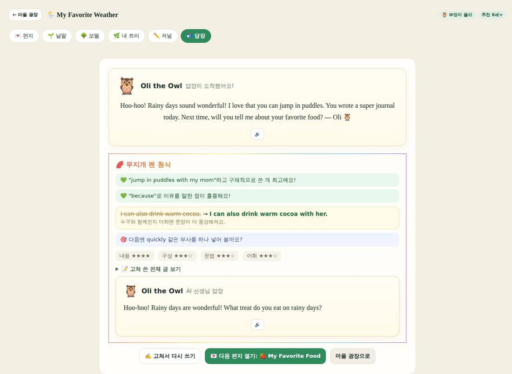
첨삭 결과를 확인한 뒤 "고쳐서 다시 쓰기" 버튼을 누르면 고친 내용을 반영해서 다시 저널을 써서 보낼 수 있어요. 다시 쓴 저널도 새 기록으로 차곡차곡 쌓여서, 초안 → 첨삭 → 고쳐쓰기로 이어지는 좋은 글쓰기 습관을 자연스럽게 길러줘요.
마을 지도 우상단의 👨👩👧 버튼(목록 화면 상단)을 누르면 아이의 학습 현황을 한눈에 볼 수 있는 대시보드가 열려요. 별도의 비밀번호 없이 언제든 확인 가능한 내부 도구예요.
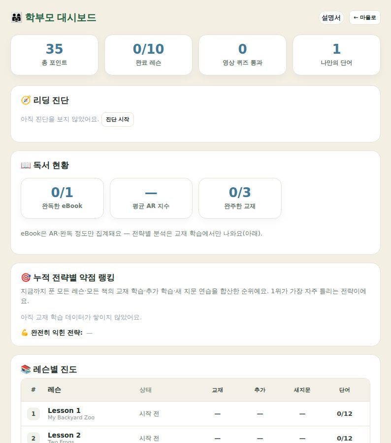
학부모 대시보드 — 위에서부터 순서대로 확인해보세요.
아이와 부모님이 자주 궁금해하는 것들을 모았어요.